<!-- Шапка страницы -->
<header>
<div class='sign'>
<img src="images/RZ.png"/>
</div>
<div class='Name'>
Схемотехника
</div>
<ul class = "menu">
<li><a href = "index.html">Главная</a></li>
<li><a href = "info2.html">Сведения</a></li>
<li><a href = "#">Картинки</a></li>
<li><a href = "#">Видео</a></li>
</ul>
</header>
<div class='section'>
<aside class='defin block'>
<lu>
<ol>Это сделано</ol>
<ol>Только для того</ol>
<ol>Чтобы оно было</ol>
</lu>
</aside>
<section class='defin block'>
<select>
<option>Только</option>
<option>для</option>
<option>того</option>
<option>чтобы</option>
<option>было</option>
</select>
<hgroup>
<h1><i>Самостоятельное</i> изучение схемотехники. Основные понятия. Часть 1</h1>
<h2>Взято с хабра</h2>
<article>
<nav>Здесь должны быть ссылочки по новигации сайта</nav>
</hgroup>
Изучение цифровой схемотехники нужно начинать с теории автоматов. В этой статье можно найти некоторые элементарные вещи, которые помогут не потеряться в дальнейших статьях. Я постарался сделать статью легкочитабельной и уверен, что неподготовленный читатель сможет в ней легко разобраться.
<br>
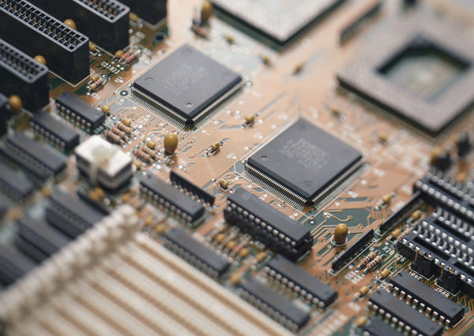
<br><textarea><mark>Сигнал — материальный носитель</mark> информации, используемый для передачи сообщений по системе связи. Сигнал, в отличие от сообщения, может генерироваться, но его приём не обязателен (сообщение должно быть принято принимающей стороной, иначе оно не является сообщением, а всего лишь сигналом).
В статье рассматривается цифровой дискретный сигнал. Это такой сигнал, который имеет несколько уровней. Очевидно, что двоичный сигнал имеет два уровня — и их принимают за 0 и 1. Когда высокий уровень обозначается единицей, а низкий нулем — такая логика называется позитивной, иначе негативной.
</textarea><br>
<nobr>Цифровой сигнал можно <br> представить в виде временной диаграммы.</nobr>
<br>
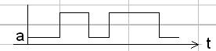
<br>
<u>В природе дискретных сигналов не существует, по этому их заменяют аналоговыми. Аналоговый сигнал не может перейти из 0 в 1 мгновенно, по этому такой сигнал обладает фронтом и срезом.
</u><br>
<ruby>
Если рисовать упрощенно то это выглядит так:
<rp>Если рисовать упрощенно то это </rp><rt>аннотация</rt><rp>выглядит так:</rp>
</ruby>
<br>
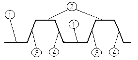<br>
<tt>1 — низкий уровень сигнала, 2 — высокий уровень сигнала, 3 — нарастание сигнала (фронт), 4 — спад сигнала (срез)</tt>
<br>
<font size="5" color="red" face="Arial">Сигналы</font> можно преобразовывать. Для этого на практике используются логические элементы, а чтобы это записать формально используются логические функции. Вот основные:
<br>
<basefont face="Arial, Helvetica, sans-serif" size="4" color="maroon">Отрицание — инвертирует сигнал. <bdo dir="rtl">На схемах обозначается так:</bdo><br>
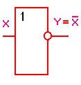
<br>
<sup>Логическое ИЛИ (логическое сложение, дизъюнкция)</sup><br>
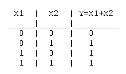<br>
<h3>На схеме:</h3><br>
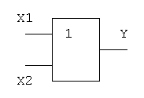
<br>
<sub>Логическое И (логическое умножение, конъюнкция)</sub><br>
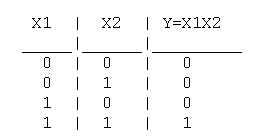<br>
На схеме:<br>
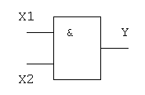
<br>
<strong>Последние два могут иметь отрицание на выходе</strong> (<acronym title="Акроним">И-НЕ</acronym>, <abbr title="аббревиатура">ИЛИ-НЕ</abbr>). Значения их логических функций инвертируются, а на схеме выход рисуется кружочком.<br>
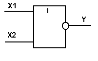 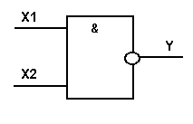
<br>
<strike>Сводная таблица логических функций двух аргументов выглядит так:</strike><br>
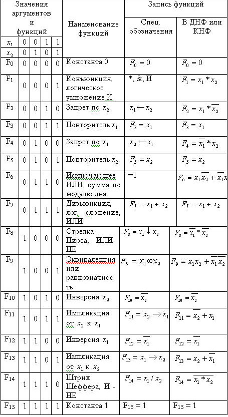
<br>
<small>Работа с логическими функциями основывается на законах алгебры логики, основы которых изложены в прикрепленном файле. Так же там есть задания для самоконтроля и контрольные вопросы по теме.
</small><br>
<samp>Результат вывода чего-то, чего ещё нет</samp><br>
<h2><s>Проектирование логических схем с помощью функций алгебры логики</s></h2>
<br>
<q>Логической схемой называется совокупность логических электронных элементов, соединенных между собой таким образом, чтобы выполнялся заданный закон функционирования схемы, иначе говоря, — выполнялась заданная логическая функция.
По зависимости выходного сигнала от входного все электронные логические схемы можно условно разбить на:
</q><br>
<center> Схемы первого рода, т.е. комбинационные схемы, выходной сигнал которых зависит только от состояния входных сигналов в каждый момент времени;</center>
<br>
<blink>Схемы второго рода или накапливающие схемы (схемы последовательностные), содержащие накапливающие схемы (элементы с памятью), выходной сигнал которых зависит как от входных сигналов, так и от состояния схемы в предыдущие моменты времени.
</blink><br>
<big>По количеству входов и выходов схемы бывают: с одним входом и одним выходом, с несколькими входами и одним выходом, с одним входом и несколькими выходами, с несколькими входами и выходами.
</big><br>
По способу осуществления синхронизации схемы бывают с внешней синхронизацией (синхронные автоматы), с внутренней синхронизацией (асинхронные автоматы являются их частным случаем).
<br>
<b>Практически любой компьютер состоит из комбинации схем первого и второго рода разной сложности. Таким образом, основой любого цифрового автомата, обрабатывающего цифровую информацию, являются электронные элементы двух типов: логические или комбинационные и запоминающие. Логические элементы выполняют простейшие логические операции над цифровой информацией, а запоминающие служат для ее хранения. Как известно, логическая операция состоит в преобразовании по определенным правилам входной цифровой информации в выходную.</b>
<br>
<span>Можно считать, что элементарные логические функции являются логическими операторами упомянутых электронных элементов, т.е. схем. Каждая такая схема обозначается определенным графическим символом. (Они были представлены выше — Элементы И, ИЛИ, НЕ, ИЛИ-НЕ, И-НЕ)
</span><br>В качестве примера ниже представлена схема электрическая функциональная логического преобразователя (комбинационного автомата), реализующего логическую функцию 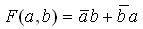 в элементном базисе из логических элементов И, ИЛИ, НЕ.
<br>
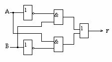
<br>
Для закрепления предлагаю, самостоятельно синтезировать логическую схему, реализующую следующие логические функции:<br>
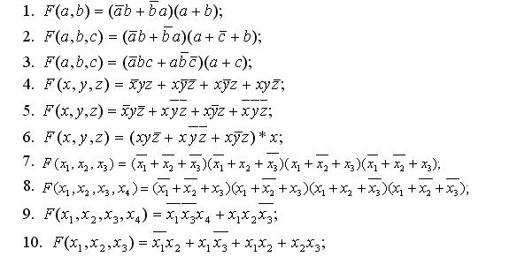
<br>
<h4>Сделать это можно к примеру в Electronic workbench.</h4>
<br>
Вот для примера первое выполненное задание:
<br>
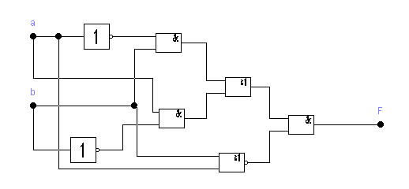
<br>
<h5>И файл ewb 5.12.</h5>
<br>
Hint: Для того чтобы включить условные обозначения в соответствии с отечественными ГОСТ-ами в файл настроек EWB.INI нужно добавить строку DIN = ON
<br>
На этом первая часть статьи заканчивается. Надеюсь, что она была не слишком утомительной. Все вышеописанное необходимо для понимания принципов работы с сигналами<wbr> в электрических схемах. В следующей статье будут рассмотрены способы минимизации логических функций, понятие абстрактного автомата и пример синтеза RS-триггера.
<br>
<h6>Проверка XMP</h6>
<br>
<xmp>
while (<>) {
$org=$_;
s/\\["']//g;
s/\/\/[^:].*//;
s/\/\*.*\*\///g;
if ($comment == 1) {
if (s/.*\*\///) {
$comment = 0;
}
else {
next;
}
}
if (s/\/\*.*//) {
$comment = 1;
}
if (/^\s*#/) {
next;
}
}</xmp>
<br>
<h1>Демонстрация plaintext </h1>
<!--
<plaintext>
while (<>) {
$org=$_;
s/\\["']//g;
s/\/\/[^:].*//;
s/\/\*.*\*\///g;
if ($comment == 1) {
if (s/.*\*\///) {
$comment = 0;
}
else {
next;
}
}
if (s/\/\*.*//) {
$comment = 1;
}
if (/^\s*#/) {
next;
}
}</plaintext>-->
<br> <kbd>Текст который нужно вводить ручками</kbd>
<br><ins>подход разработчиков этого
браузера не был изменен</ins>
<br><em>Я выделяю этот текст</em>с
<dfn>Тут есть термин</dfn>
<br>
<del>Текст тудалённый в новой версии документа</del>
<br>Код
<code>while (<>) {
$org=$_;
s/\\["']//g;
s/\/\/[^:].*//;
s/\/\*.*\*\///g;
if ($comment == 1) {
if (s/.*\*\///) {
$comment = 0;
}
else {
next;
}
}
if (s/\/\*.*//) {
$comment = 1;
}
if (/^\s*#/) {
next;
}
}</code>
<br>
<hr>
<var>content</var>
<br>
<cite>"учиться, учиться и ещё раз учиться"</cite><br>
<blockquote>А эта цитата длиннее предыдущей</blockquote>
<figure>
<p><img src="images/GirlAndCat.png" alt="цуаукфаук" width="130"></p>
<figcaption>Группировка объектов</figcaption>
</figure>
<figure>
<p><marquee behavior="scroll" width="280" height="" scrollamount="6">
</marquee></p>
<figcaption>с подписями</figcaption>
</figure>
<figure>
<p><img src="gif/nadeko_drink.gif" alt="цуаукфаук" width="280"></p>
<figcaption>ммм, Надеко классная всё же</figcaption>
</figure>
<pre>
- -----
----- |-----
||----| ----||
||----- -----||
||-----| |-----||
|| ----- ------||
||- ----| |------||
||---||-- -------||
||--|| --| |-------||
|| -|| |-- --- - --||
|| -|| --|-|--| - ---|
|---|| |-----| |-----|
|---|| |---- |-----|
|----| --- |-----|
|----- ------|
</pre>
</article>
<footer>
Copyright вроде Рома, вроде не Рома
</footer>
<address>А Рома ведь не такой уж и плохой парень<br>
Вот даже ссылочка на него есть https://vk.com/romez1</address>
</section>
</div>
</body>
</html>
</plaintext></body>